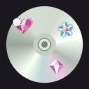
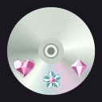
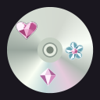

Original soft disc colors and smooth reflections, no decorative border.
Smaller rhinestone charms on the dark-mode background.
A · balanced

A smaller heart and flower above the hub, diamond below.
B · lower arc

Three small gems gathered along the lower edge.
C · scattered

A loose diagonal arrangement across the original disc.